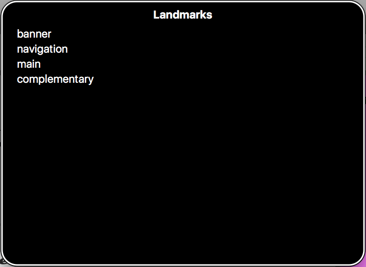

Following on from the previous article, sometimes making complex UI controls that involve unsemantic HTML and dynamic JavaScript-updated content can be difficult. WAI-ARIA is a technology that can help with such problems by adding in further semantics that browsers and assistive technologies can recognize and use to let users know what is going on. Here we'll show how to use it at a basic level to improve accessibility.
| Prerequisites: | Basic computer literacy, a basic understanding of HTML, CSS, and JavaScript, an understanding of the previous articles in the course. |
|---|---|
| Objective: | To gain familiarity with WAI-ARIA, and how it can be used to provide useful additional semantics to enhance accessibility where required. |
Let's start by looking at what WAI-ARIA is, and what it can do for us.
As web apps started to get more complex and dynamic, a new set of accessibility features and problems started to appear.
For example, HTML5 introduced a number of semantic elements to define common page features ({{htmlelement("nav")}}, {{htmlelement("footer")}}, etc.) Before these were available, developers would use {{htmlelement("div")}}s with IDs or classes, e.g. <div class="nav">, but these were problematic, as there was no easy way to easily find a specific page feature such as the main navigation programmatically.
The initial solution was to add one or more hidden links at the top of the page to link to the navigation (or whatever else), for example:
<a href="#hidden" class="hidden">Skip to navigation</a>
But this is still not very precise, and can only be used when the screenreader is reading from the top of the page.
As another example, apps started to feature complex controls like date pickers for choosing dates, sliders for choosing values, etc. HTML5 provides special input types to render such controls:
<input type="date"> <input type="range">
These are not well-supported across browsers, and it is also difficult to style them, making them not very useful for integrating with website designs. As a result, developers quite often rely on JavaScript libraries that generate such controls as a series of nested {{htmlelement("div")}}s or table elements with classnames, which are then styled using CSS and controlled using JavaScript.
The problem here is that visually they work, but screenreaders can't make any sense of what they are at all, and their users just get told that they can see a jumble of elements with no semantics to describe what they mean.
WAI-ARIA (Web Accessibility Initiative - Accessible Rich Internet Applications) is a specification written by the W3C, defining a set of additional HTML attributes that can be applied to elements to provide additional semantics and improve accessibility wherever it is lacking. There are three main features defined in the spec:
role="navigation" ({{htmlelement("nav")}}) or role="complementary" ({{htmlelement("aside")}}), but there are also others that describe different pages structures, such as role="banner", role="search", role="tabgroup", role="tab", etc., which are commonly found in UIs.aria-required="true" specifies that a form input needs to be filled in order to be valid, whereas aria-labelledby="label" allows you to put an ID on an element, then reference it as being the label for anything else on the page, including multiple elements, which is not possible using <label for="input">. As an example, you could use aria-labelledby to specify that a key description contained in a {{htmlelement("div")}} is the label for multiple table cells, or you could use it as an alternative to image alt text — specify existing information on the page as an image's alt text, rather than having to repeat it inside the alt attribute. You can see an example of this at Text alternatives.aria-disabled="true", which specifies to a screenreader that a form input is currently disabled. States differ from properties in that properties don't change throughout the lifecycle of an app, whereas states can change, generally programmatically via JavaScript.An important point about WAI-ARIA attributes is that they don't affect anything about the web page, except for the information exposed by the browser's accessibility APIs (where screenreaders get their information from). WAI-ARIA doesn't affect webpage structure, the DOM, etc., although the attributes can be useful for selecting elements by CSS.
Note: You can find a useful list of all the ARIA roles and their uses, with links to futher information, in the WAI-ARIA spec — see Definition of Roles.
The spec also contains a list of all the properties and states, with links to further information — see Definitions of States and Properties (all aria-* attributes).
This is not an easy question to answer. It is difficult to find a conclusive resource that states what features of WAI-ARIA are supported, and where, because:
This last point is key — To use a screenreader in the first place, your operating system needs to run browsers that have the necessary accessibility APIs in place to expose the information screenreaders need to do their job. Most popular OSes have one or two browsers in place that screenreaders can work with. The Paciello Group has a fairly up-to-date post that provides data for this — see Rough Guide: browsers, operating systems and screen reader support updated.
Next, you need to worry about whether the browsers in question support ARIA features and expose them via their APIs, but also whether screenreaders recognize that information and present it to their users in a useful way.
In this article, we won't attempt to cover every WAI-ARIA feature, and its exact support details. Instead, we will cover the most critical WAI-ARIA features for you to know about; if we don't mention any support details, you can assume that the feature is well-supported. We will clearly mention any exceptions to this.
Note: Some JavaScript libraries support WAI-ARIA, meaning that when they generate UI features like complex form controls, they add ARIA attributes to improve the accessibility of those features. If you are looking for a 3rd party JavaScript solution for rapid UI development, you should definitely consider the accessibility of its UI widgets as an important factor when making your choice. Good examples are jQuery UI (see About jQuery UI: Deep accessibility support), ExtJS, and Dojo/Dijit.
We talked about some of the problems that prompted WAI-ARIA to be created earlier on, but essentially, there are four main areas that WAI-ARIA is useful in:
role attribute values can act as landmarks that either replicate the semantics of HTML5 elements (e.g. {{htmlelement("nav")}}), or go beyond HTML5 semantics to provide signposts to different functional areas, e.g search, tabgroup, tab, listbox, etc.aria-live to inform screenreader users when an area of content is updated, e.g. via XMLHttpRequest, or DOM APIs.tabindex).<div>s along with CSS/JavaScript is used to create a complex UI-feature, or a native control is greatly enhanced/changed via JavaScript, accessibility can suffer — screenreader users will find it difficult to work out what the feature does if there are no semantics or other clues. In these situations, ARIA can help to provide what's missing with a combination of roles like button, listbox, or tabgroup, and properties like aria-required or aria-posinset to provide further clues as to functionality.One thing to remember though — you should only use WAI-ARIA when you need to! Ideally, you should always use native HTML features to provide the semantics required by screenreaders to tell their users what is going on. Sometimes this isn't possible, either because you have limited control over the code, or because you are creating something complex that doesn't have an easy HTML element to implement it. In such cases, WAI-ARIA can be a valuable accessibility enhancing tool.
But again, only use it when necessary!
Note: Also, try to make sure you test your site with a variety of real users — non-disabled people, people using screenreaders, people using keyboard navigation, etc. They will have better insights than you about how well it works.
In the next section we'll look at the four areas in more detail, along with practical examples. Before you continue, you should get a screenreader testing setup put in place, so you can test some of the examples as you go through.
See our section on testing screenreaders for more information.
WAI-ARIA adds the role attribute to browsers, which allows you to add extra semantic value to elements on your site wherever they are needed. The first major area in which this is useful is providing information for screenreaders so that their users can find common page elements. Let's look at an example — our website-no-roles example (see it live) has the following structure:
<header>
<h1>...</h1>
<nav>
<ul>...</ul>
<form>
<!-- search form -->
</form>
</nav>
</header>
<main>
<article>...</article>
<aside>...</aside>
</main>
<footer>...</footer>
If you try testing the example with a screenreader in a modern browser, you'll already get some useful information. For example, VoiceOver gives you the following:
<header> element — "banner, 2 items" (it contains a heading and the <nav>).<nav> element — "navigation 2 items" (it contains a list and a form).<main> element — "main 2 items" (it contains an article and an aside).<aside> element — "complementary 2 items" (it contains a heading and a list).<footer> element — "footer 1 item".If you go to VoiceOver's landmarks menu (accessed using VoiceOver key + U and then using the cursor keys to cycle through the menu choices), you'll see that most of the elements are nicely listed so they can be accessed quickly.

However, we could do better here. the search form is a really important landmark that people will want to find, but it is not listed in the landmarks menu or treated like a notable landmark, beyond the actual input being called out as a search input (<input type="search">). In addition, some older browsers (most notably IE8) don't recognize the semantics of the HTML5 elements.
Let's improve it by the use of some ARIA features. First, we'll add some role attributes to our HTML structure. You can try taking a copy of our original files (see index.html and style.css), or navigating to our website-aria-roles example (see it live), which has a structure like this:
<header>
<h1>...</h1>
<nav role="navigation">
<ul>...</ul>
<form role="search">
<!-- search form -->
</form>
</nav>
</header>
<main>
<article role="article">...</article>
<aside role="complementary">...</aside>
</main>
<footer>...</footer>
We've also given you a bonus feature in this example — the {{htmlelement("input")}} element has been given the attribute aria-label, which gives it a descriptive label to be read out by a screenreader, even though we haven't included a {{htmlelement("label")}} element. In cases like these, this is very useful — a search form like this one is a very common, easily recognized feature, and adding a visual label would spoil the page design.
<input type="search" name="q" placeholder="Search query" aria-label="Search through site content">
Now if we use VoiceOver to look at this example, we get some improvements:
aria-label attribute is read out when the form input is highlighted.Beyond this, the site is more likely to be accessible to users of older browsers such as IE8; it is worth including ARIA roles for that purpose. And if for some reason your site is built using just <div>s, you should definitely include the ARIA roles to provide these much needed semantics!
The improved semantics of the search form have shown what is made possible when ARIA goes beyond the semantics available in HTML5. You'll see a lot more about these semantics and the power of ARIA properties/attributes below, especially in the {{anch("Accessibility of non-semantic controls")}} section. For now though, let's look at how ARIA can help with dynamic content updates.
Content loaded into the DOM can be easily accessed using a screenreader, from textual content to alternative text attached to images. Traditional static websites with largely text content are therefore easy to make accessible for people with visual impairments.
The problem is that modern web apps are often not just static text — they tend to have a lot of dynamically updating content, i.e. content that updates without the entire page reloading via a mechanism like XMLHttpRequest, Fetch, or DOM APIs. These are sometimes referred to as live regions.
Let's look at a quick example — see aria-no-live.html (also see it running live). In this example we have a simple random quote box:
<section>
<h1>Random quote</h1>
<blockquote>
<p></p>
</blockquote>
</section>
Our JavaScript loads a JSON file via XMLHttpRequest containing a series of random quotes and their authors. Once that is done, we start up a setInterval() loop that loads a new random quote into the quote box every 10 seconds:
let intervalID = window.setInterval(showQuote, 10000);
This works OK, but it is not good for accessibility — the content update is not detected by screenreaders, so their users would not know what is going on. This is a fairly trivial example, but just imagine if you were creating a complex UI with lots of constantly updating content, like a chat room, or a strategy game UI, or a live updating shopping cart display — it would be impossible to use the app in any effective way without some kind of way of alerting the user to the updates.
WAI-ARIA fortunately provides a useful mechanism to provide these alerts — the aria-live property. Applying this to an element causes screenreaders to read out the content that is updated. How urgently the content is read out depends on the attribute value:
off: The default. Updates should not be announced.polite: Updates should be announced only if the user is idle.assertive: Updates should be announced to the user as soon as possible.We'd like you to take a copy of aria-no-live.html and quotes.json, and update your <section> tag as follows:
<section aria-live="assertive">
This will cause a screenreader to read out the content as it is updated.
Note: Most browsers will throw a security exception if you try to do an XMLHttpRequest call from a file:// URL, e.g. if you just load the file by loading it directly into the browser (via double clicking, etc.). To get it to run, you will need to upload it to a web server, for example using GitHub, or a local web server like Python's SimpleHTTPServer.
There is an additional consideration here — only the bit of text that updates is read out. It might be nice if we always read out the heading too, so the user can remember what is being read out. To do this, we can add the aria-atomic property to the section. Update your <section> tag again, like so:
<section aria-live="assertive" aria-atomic="true">
The aria-atomic="true" attribute tells screenreaders to read out the entire element contents as one atomic unit, not just the bits that were updated.
Note: You can see the finished example at aria-live.html (see it running live).
Note: The aria-relevant property is also quite useful for controlling what gets read out when a live region is updated. You can for example only get content additions or removals read out.
As discussed in a few other places in the module, one of the key strengths of HTML with respect to accessibility is the built-in keyboard accessibility of features such as buttons, form controls, and links. Generally, you are able to use the tab key to move between controls, the Enter/Return key to select or activate controls, and occasionally other controls as needed (for example the up and down cursor to move between options in a <select> box).
However, sometimes you will end up having to write code that either uses non-semantic elements as buttons (or other types of control), or uses focusable controls for not quite the right purpose. You might be trying to fix some bad code you've inherited, or you might be building some kind of complex widget that requires it.
In terms of making non-focusable code focusable, WAI-ARIA extends the tabindex attribute with some new values:
tabindex="0" — as indicated above, this value allows elements that are not normally tabbable to become tabbable. This is the most useful value of tabindex.tabindex="-1" — this allows not normally tabbable elements to receive focus programmatically, e.g. via JavaScript, or as the target of links. We discussed this in more detail and showed a typical implementation back in our HTML accessibility article — see Building keyboard accessibility back in.
This follows on from the previous section — when a series of nested <div>s along with CSS/JavaScript is used to create a complex UI-feature, or a native control is greatly enhanced/changed via JavaScript, not only can keyboard accessibility suffer, but screenreader users will find it difficult to work out what the feature does if there are no semantics or other clues. In such situations, ARIA can help to provide those missing semantics.
First of all, let's revisit the form example we first looked at in our CSS and JavaScript accessibility article (read Keeping it unobtrusive for a full recap). At the end of this section we showed that we have included some ARIA attributes on the error message box that displays any validation errors when you try to submit the form:
<div class="errors" role="alert" aria-relevant="all"> <ul> </ul> </div>
role="alert" automatically turns the element it is applied to into a live region, so changes to it are read out; it also semantically identifies it as an alert message (important time/context sensitive information), and represents a better, more accessible way of delivering an alert to a user (modal dialogs like alert() calls have a number of accessibility problems; see Popup Windows by WebAIM).aria-relevant value of all instructs the screenreader to read out the contents of the error list when any changes are made to it — i.e. when errors are added or removed. This is useful because the user will want to know what errors are left, not just what has been added or removed from the list.We could go further with our ARIA usage, and provide some more validation help. How about indicating whether fields are required in the first place, and what range the age should be?
<form> tag, like the one below, and mark both the form <label>s with an asterisk. This is normally how we mark required fields for sighted users.
<p>Fields marked with an asterisk (*) are required.</p>
aria-required attribute to give screenreaders hints that they should tell users that form inputs need to be filled in. Update the <input> elements like so:
<input type="text" name="name" id="name" aria-required="true"> <input type="number" name="age" id="age" aria-required="true">
aria-valuemin and aria-valuemax properties to specify min and max values, but these currently don't seem very well supported; a better supported feature is the HTML5 placeholder attribute, which can contain a message that is shown in the input when no value is entered, and is read out by a number of screenreaders. Update your number input like this:
<input type="number" name="age" id="age" placeholder="Enter 1 to 150" aria-required="true">
Note: You can see the finished example live at form-validation-updated.html.
WAI-ARIA also enables some advanced form labelling techniques, beyond the classic {{htmlelement("label")}} element. We already talked about using the aria-label property to provide a label where we don't want the label to be visible to sighted users (see the {{anch("Signposts/Landmarks")}} section, above). There are some other labelling techniques that use other properties such as aria-labelledby if you want to designate a non-<label> element as a label or label multiple form inputs with the same label, and aria-describedby, if you want to associate other information with a form input and have it read out as well. See WebAIM's Advanced Form Labeling article for more details.
There are many other useful properties and states too, for indicating the status of form elements. For example, aria-disabled="true" can be used to indicate that a form field is disabled. Many browsers will just skip past disabled form fields, and they won't even be read out by screenreaders, but in some cases they will be perceived, so it is a good idea to include this attribute to let the screenreader know that a disabled input is in fact disabled.
If the disabled state of an input is likely to change, then it is also a good idea to indicate when it happens, and what the result is. For example, in our form-validation-checkbox-disabled.html demo there is a checkbox that when checked, enables another form input to allow further information be entered. We've set up a hidden live region:
<p class="hidden-alert" aria-live="assertive"></p>
which is hidden from view using absolute positioning. When this is checked/unchecked, we update the text inside the hidden live region to tell screenreader users what the result of checking this checkbox is, as well as updating the aria-disabled state, and some visual indicators too:
function toggleMusician(bool) {
let instruItem = formItems[formItems.length-1];
if(bool) {
instruItem.input.disabled = false;
instruItem.label.style.color = '#000';
instruItem.input.setAttribute('aria-disabled', 'false');
hiddenAlert.textContent = 'Instruments played field now enabled; use it to tell us what you play.';
} else {
instruItem.input.disabled = true;
instruItem.label.style.color = '#999';
instruItem.input.setAttribute('aria-disabled', 'true');
instruItem.input.removeAttribute('aria-label');
hiddenAlert.textContent = 'Instruments played field now disabled.';
}
}
A few times in this course already, we've mentioned the native accessibility of (and the accessibility issues behind using other elements to fake) buttons, links, or form elements (see UI controls in the HTML accessibility article, and {{anch("Enhancing keyboard accessibility")}}, above). Basically, you can add keyboard accessibility back in without too much trouble in many cases, using tabindex and a bit of JavaScript.
But what about screenreaders? They still won't see the elements as buttons. If we test our fake-div-buttons.html example in a screenreader, our fake buttons will be reported using phrases like "Click me!, group", which is obviously confusing.
We can fix this using a WAI-ARIA role. Make a local copy of fake-div-buttons.html, and add role="button" to each button <div>, for example:
<div data-message="This is from the first button" tabindex="0" role="button">Click me!</div>
Now when you try this using a screenreader, you'll have buttons be reported using phrases like "Click me!, button" — much better.
Note: Don't forget however that using the correct semantic element where possible is always better. If you want to create a button, and can use a {{htmlelement("button")}} element, you should use a {{htmlelement("button")}} element!
There are a whole host of other roles that can identify non-semantic element structures as common UI features that go beyond what's available in standard HTML, for example combobox, slider, tabpanel, tree. You can see a number of useful examples in the Deque university code library, to give you an idea of how such controls can be made accessible.
Let's go through an example of our own. We'll return to our simple absolutely-positioned tabbed interface (see Hiding things in our CSS and JavaScript accessibility article), which you can find at Tabbed info box example (see source code).
This example as-is works fine in terms of keyboard accessibility — you can happily tab between the different tabs and select them to show the tab contents. It is also fairly accessible too — you can scroll through the content and use the headings to navigate, even if you can't see what is happening on screen. It is however not that obvious what the content is — a screenreader currently reports the content as a list of links, and some content with three headings. It doesn't give you any idea of what the relationship is between the content. Giving the user more clues as to the structure of the content is always good.
To improve things, we've created a new version of the example called aria-tabbed-info-box.html (see it running live). We've updated the structure of the tabbed interface like so:
<ul role="tablist">
<li class="active" role="tab" aria-selected="true" aria-setsize="3" aria-posinset="1" tabindex="0">Tab 1</li>
<li role="tab" aria-selected="false" aria-setsize="3" aria-posinset="2" tabindex="0">Tab 2</li>
<li role="tab" aria-selected="false" aria-setsize="3" aria-posinset="3" tabindex="0">Tab 3</li>
</ul>
<div class="panels">
<article class="active-panel" role="tabpanel" aria-hidden="false">
...
</article>
<article role="tabpanel" aria-hidden="true">
...
</article>
<article role="tabpanel" aria-hidden="true">
...
</article>
</div>
Note: The most striking change here is that we've removed the links that were originally present in the example, and just used the list items as the tabs — this was done because it makes things less confusing for screenreader users (the links don't really take you anywhere; they just change the view), and it allows the setsize/position in set features to work better — when these were put on the links, the browser kept reporting "1 of 1" all the time, not "1 of 3", "2 of 3", etc.
The new features are as follows:
tablist, tab, tabpanel — these identify the important areas of the tabbed interface — the container for the tabs, the tabs themselves, and the corresponding tabpanels.aria-selected — Defines which tab is currently selected. As different tabs are selected by the user, the value of this attribute on the different tabs is updated via JavaScript.aria-hidden — Hides an element from being read out by a screenreader. As different tabs are selected by the user, the value of this attribute on the different tabs is updated via JavaScript.tabindex="0" — As we've removed the links, we need to give the list items this attribute to provide it with keyboard focus.aria-setsize — This property allows you to specify to screenreaders that an element is part of a series, and how many items the series has.aria-posinset — This property allows you to specify what position in a series an element is in. Along with aria-setsize, it provides a screenreader with enough information to tell you that you are currently on item "1 of 3", etc. In many cases, browsers should be able to infer this information from the element hierarchy, but it certainly helps to provide more clues.In our tests, this new structure did serve to improve things overall. The tabs are now recognized as tabs (e.g. "tab" is spoken by the screenreader), the selected tab is indicated by "selected" being read out with the tab name, and the screenreader also tells you which tab number you are currently on. In addition, because of the aria-hidden settings (only the non-hidden tab ever has aria-hidden="false" set), the non-hidden content is the only one you can navigate down to, meaning the selected content is easier to find.
Note: If there is anything you explicitly don't want screen readers to read out, you can give them the aria-hidden="true" attribute.
You've reached the end of this article, but can you remember the most important information? You can find some further tests to verify that you've retained this information before you move on — see Test your skills: WAI-ARIA.
This article has by no means covered all that's available in WAI-ARIA, but it should have given you enough information to understand how to use it, and know some of the most common patterns you will encounter that require it.
{{PreviousMenuNext("Learn/Accessibility/CSS_and_JavaScript","Learn/Accessibility/Multimedia", "Learn/Accessibility")}}